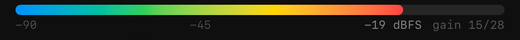
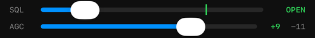

Receiver
The page that does everything: tune wherever you like and find signals on the waterfall. The other pages are each built for one kind of signal; this one receives any of them.

Three steps
- Enter a frequencyTap the large frequency figures, type the frequency in MHz on the Tune sheet, for example
101.7, and tap Go. - Choose a modeTap the blue mode name on the left (WFM, NFM, AM…) and pick one. If you are not sure which, see the table below.
- Press playThe round button left of the frequency. Once the waterfall scrolls, a bright column is a signal: tap it and the receiver tunes there.
What is on the page
The large figures are the frequency you are listening to; tap them to type one. On the line beneath, hw is where the receiver hardware actually sits (the app keeps it slightly off on purpose, clear of the spike at the receiver's centre), followed by the mode and the passband width.

The strength of what is arriving, in dBFS (0 is full scale). gain 15/28 on the right is the receiver's present gain step, which the app sets by itself: down when the signal is too strong, up when it is weak.

SQL silences the hiss when nobody is talking. The small mark on the slider is the noise measured right now: put the slider a little to its right. The label says OPEN (signal, audio on) or shut (no signal, silent). AGC brings the audio up to the loudness the slider sets; the figure on the right is the gain actually applied.

The mode is on the left. A lit button is on: SQL squelch; FIL1 / 2 / 3 the passband (narrow, standard, wide), one tap each; MONI forces the squelch open to hear a weak signal; NCH removes the steady tones the receiver makes itself; NR noise reduction, which lowers the hiss and leaves the voice a little hollow. The last two are not shown in WFM: they are made for speech.

− + on the left zoom the waterfall; the figure between them is the width on screen. On the right, ‹ › move one step and « » ten; the figure in the middle is the step, and tapping it changes it (25k for the air band, 100k for FM broadcast).

Where to look when something is wrong. link is the sample rate arriving; iqdrop counts samples the phone could not process in time and should be 0; under counts times the speaker ran out of audio; ring is how full the audio buffer is. See If it will not connect.

The spectrum now on top; under it the waterfall holds the last ten seconds or so, older further down. The line and the grey band in the middle are the frequency and the passband being heard. You work this area with a finger; see the next section.
Working on the waterfall
| Gesture | What it does |
|---|---|
| Tap | Tunes to that frequency. Tap where you see a signal: it is the quickest way to tune. |
| Drag sideways | Tunes continuously; the picture follows the finger. |
| Drag up or down | Changes the waterfall's brightness. When everything is squeezed into one colour, a drag makes the noise dark and the signals bright. |
| AUTO, top left | Lets the app set the brightness. |
| CAL, top left | Sets the brightness once from the present noise floor and keeps it. |
The waterfall is faster than the ear. To find a signal whose frequency you do not know, widen the span, watch for a column that comes and goes, then tap it and listen.
Which mode
| Mode | For | Typical frequencies |
|---|---|---|
| WFM | FM broadcast | 87.5–108 MHz |
| NFM | Narrow FM voice: handhelds, amateur radio, marine, railways | 136–174 MHz, 400–470 MHz |
| AM | Air traffic control voice | 118–137 MHz |
| USB / LSB | Single-sideband voice on the amateur and short-wave bands | The weak-signal segment near 144 MHz, among others |
| CW | Morse code | The low end of the amateur bands |
| Digital | D-STAR, System Fusion (YSF) and DMR digital voice, recognised automatically | D-STAR, C4FM and DMR simplex frequencies and repeaters |
NFM and Digital switch between each other by themselves. As with the AMS on a Yaesu mobile: on one frequency, a D-STAR, YSF or DMR transmission turns the button to Digital, plays the digital voice and shows the card; when it ends the button turns back to NFM and analogue FM plays as usual. So either choice works, and you need not know in advance which mode a station uses. Between transmissions SQL keeps the hiss off.
A wrong mode harms nothing; it just sounds wrong. FM heard in AM is faint and distorted, AM heard in NFM is hiss. Try another and you will know.
D-STAR digital voice
Choose Digital and tune to a D-STAR frequency to hear the voice, see the callsign, message and position, and receive pictures; everything received is kept in RX History, behind the clock at the top right. There is enough of it for a page of its own: D-STAR digital voice →. Yaesu System Fusion and DMR are received in the same mode: YSF digital voice →, DMR digital voice →
Settings that matter on this page
| Setting | What it does |
|---|---|
| Sample rate | How wide a piece of spectrum the waterfall sees. 1.024 MSPS asks little of the network and suits everyday use; 2.4 MSPS shows 2.4 MHz at once, good for hunting, and wants better Wi-Fi. |
| Waterfall | Station: the frequency being heard stays in the middle. Whole band: the picture holds the whole piece of spectrum the receiver delivers and the marker moves across it. |
| Crystal error | Frequency calibration, in the receiver's editor; see Connect in the app. |
This page is also the monitor
While another page — ADS-B or AIS, say — is using the receiver, the Receiver page shows the waterfall of that page's band: 1090 MHz while ADS-B runs. The top of the page says which page holds the receiver. To use it yourself, press play, and the other page stops.
Common situations
| What you see | Why, and what to do |
|---|---|
| A bright column, but no sound | The squelch is shut: drag SQL to the left, or tap MONI to force it open. |
| Hiss all the time | The squelch is set too low: drag SQL to the right of the small mark. |
| A steady whistle under speech | One of the receiver's own spurious tones is in the passband: check NCH is lit. |
| Too quiet | Drag AGC to the right. It only adds gain, so a broadcast that is already loud will not get louder. |
| A station sits off the centre line | The frequency is not calibrated; see Frequency calibration. |
| Nothing below 24 MHz | An RTL-SDR tunes roughly 24–1766 MHz. Medium wave and short wave need an upconverter or a model with direct sampling. |
Recording

The dot right of the frequency is the record button, and what it does depends on the mode:
| Mode | Button | How it records |
|---|---|---|
| NFM / Digital | Filled red dot, AUTO REC under it | By itself: each time the squelch opens — somebody keys up — what you hear becomes one row in RX History. Under half a second is a squelch blip and is not kept; a squelch that opens four times in ten seconds (set too low, flapping) pauses recording until it settles. Tap to turn auto recording off. |
| WFM | Hollow dot | By hand: a station never stops, so there is no transmission to cut at. Tap while playing to start, tap again to stop. Recorded in stereo. |
Auto recording needs SQL on — with the squelch off you hear continuous hiss, which is not a transmission. Digital voice (D-STAR, YSF, DMR) is recorded on its own, with callsigns, so it is not recorded a second time as analogue.
The space recordings may take is set in Settings under Recording (2 GB by default); past it the oldest records are deleted first, digital ones included.